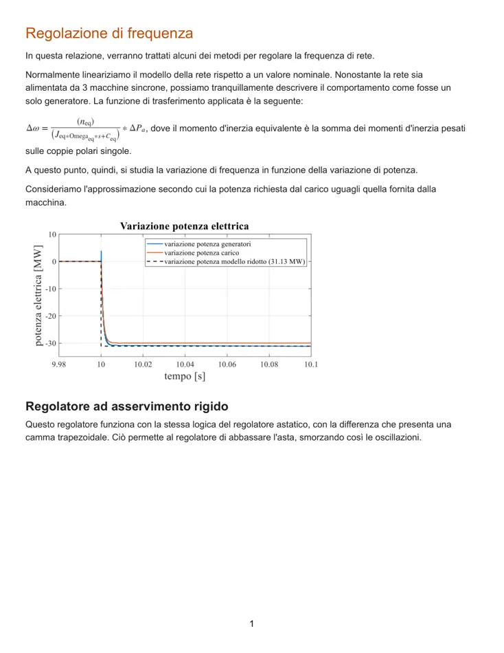

What this collection covers
These academic exercises explore the mathematical modelling and time response of rotating electrical machines and power systems. They include transformations of three-phase variables, equivalent-circuit parameters and simulations of selected transient behaviours.

Topics documented
Clarke–Park transformationsMapping three-phase signals into stationary/rotating reference frames.
Induction machine transientsStarting and braking responses, current peaks and torque dynamics.
Synchronous machine modelsParameter derivation and comparison of dynamic approximations.
Network frequency & voltageResponses of generators and regulators to disturbances.
Examples of modelling practice
- Compared a full synchronous-machine description with reduced-order approximations for dynamic response.
- Studied machine starting and braking under switching and inverter-based strategies.
- Used Clarke/Park coordinates to analyze balanced and unbalanced three-phase quantities.
- Examined the interaction between generators, control inputs and network quantities.
I do not present field-oriented control or industrial PID tuning as completed implementations here unless those specific results are documented. The linked reports are the source of the claims on this page.